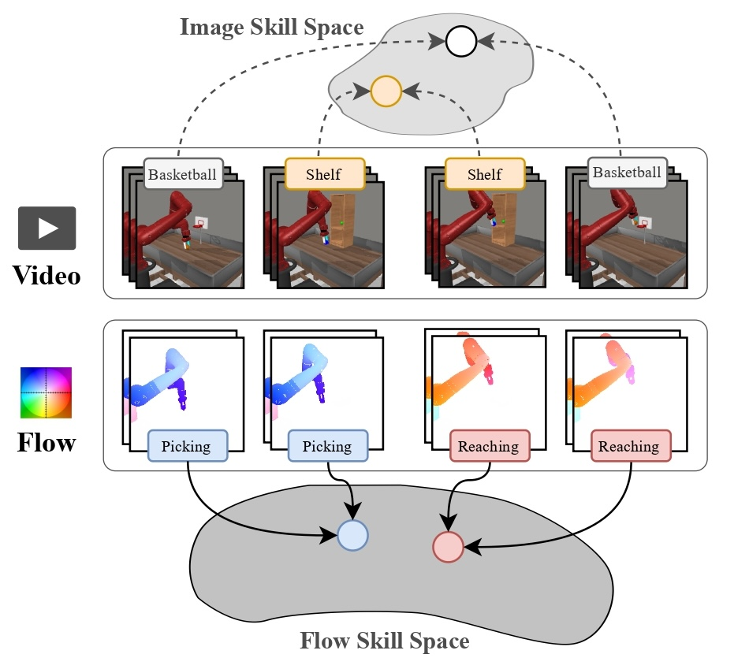

|
Hung-Chieh Fang I am a senior undergrad majoring in Computer Science at National Taiwan University, where I am fortunate to be advised by Professors Hsuan-Tien Lin, Shao-Hua Sun and Yun-Nung (Vivian) Chen. Currently, I am a visiting research intern at Stanford University, working with Prof. Dorsa Sadigh. Previously, I was a visiting student at The Chinese University of Hong Kong, where I had the privilege of working with Dr. Yifei Zhang and Prof. Irwin King. I am applying for PhD programs in Fall 2026. Email / Google Scholar / Github / X |

|
News |
| - [June 2025] Our paper on improving generalization under non-IID data has been accepted to ICCV 2025. See you in Hawaii! | |
| - [June 2025] I'm fortunate to visit ILIAD at Stanford, hosted by Prof. Dorsa Sadigh. | |
| - [May 2025] Our paper on universal domain adaptation across any class priors has been accepted to ICML 2025. See you in Vancouver! |
ResearchI am broadly interested in robotics, representation learning and reinforcement learning. My goal is to develop robots with generalist intelligence that can autonomously adapt through interaction and feedback from both humans and the physical world. |

|
DexDrummer: In-Hand, Contact-Rich, and Long-Horizon Dexterous Robot Drumming
Hung-Chieh Fang, Amber Xie, Jennifer Grannen, Dorsa Sadigh Under Review paper / website
We propose drumming as a unified testbed for in-hand, contact-rich, and long-horizon dexterous manipulation. We present DexDrummer, a general contact-targeted RL recipe that enables dexterous skills for long horizon songs.
|
|

|
Learning Skill Abstraction from Action-Free Videos
Hung-Chieh Fang*, Kuo-Han Hung*, Chu-Rong Chen, Po-Jung Chou, Chun-Kai Yang, Po-Chen Ko, Yu-Chiang Wang, Yueh-Hua Wu, Min-Hung Chen, Shao-Hua Sun ICML Workshop on Building Physically Plausible World Models, 2025 paper / website / poster
We propose SOF, a method that leverages temporal structures in videos while enabling easier translation to low-level control. SOF learns a latent skill space through optical flow representations that better aligns video and action dynamics, thereby improving long-horizon performance.
|

|
Soft Separation and Distillation: Toward Global Uniformity in Federated Unsupervised Learning
Hung-Chieh Fang, Hsuan-Tien Lin, Irwin King, Yifei Zhang International Conference on Computer Vision (ICCV), 2025 paper / website / code / poster
We explore how to improve generalization under highly non-IID data distributions where representations are non-shared. We propose a plug-and-play regularizer that encourages dispersion to improve uniformity without sacrificing semantic alignment.
|

|
Tackling Dimensional Collapse toward Comprehensive Universal Domain Adaptation
Hung-Chieh Fang, Po-Yi Lu, Hsuan-Tien Lin International Conference on Machine Learning (ICML), 2025 paper / website / poster
We study how to adapt to arbitrary target domains without assuming any class-set priors. Existing methods suffer from severe negative transfer under large class-set shifts due to the overestimation of importance weights. We propose a simple uniformity loss that increases the entropy of target representations and improves performance across all class-set priors.
|

|
Open-domain Conversational Question Answering with Historical Answers
Hung-Chieh Fang*, Kuo-Han Hung*, Chao-Wei Huang, Yun-Nung Chen Asian Chapter of the Association for Computational Linguistics (AACL), 2022 paper / code
We propose combining the signal from historical answers with the noise-reduction ability of knowledge distillation to improve information retrieval and question answering.
|
Teaching and Service |
|
|
Reviewer
ICLR 2026, TMLR 2025 |
|
|
National Taiwan University
Teaching Assistant, EE5100: Introduction to Generative Artificial Intelligence, Spring 2024 Teaching Assistant, CSIE5043: Machine Learning, Spring 2023 |
|
This template is adapted from here. |